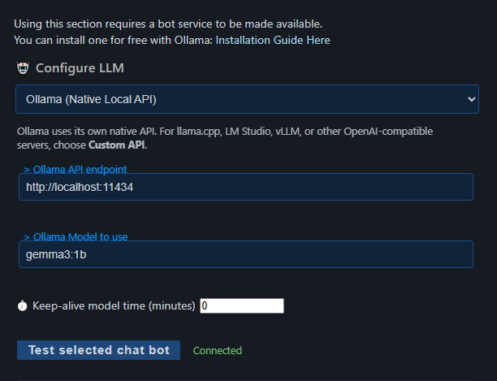

Understand the Three Separate Parts
A working AI provider is only the first part of a live chat bot. The provider, the Primary bot, and the reply destination must each be configured.
| Part | What It Does | What It Does Not Prove |
|---|---|---|
| AI provider | Generates text with Ollama, a hosted API, or another supported service. | That live chat is being captured or that replies can be posted. |
| Primary chat bot | Decides which captured live messages should receive an AI reply. | That the source platform or account permits send-back. |
| Reply destination | Publishes generated replies to the bot output channel and can also send them through the captured chat source. | That bot.html is open or that a separate platform bot account was created. |
Important: a green Connected result only confirms that the selected provider and model answered one test prompt.
1. Configure an AI Provider
- Open the Social Stream settings and expand Chat Bots and AI services.
- Open Configure LLM Service Provider.
- Choose the provider that matches the service you are actually running.
- Enter the endpoint, model name, API key, or other fields shown for that provider.
- Select Test selected chat bot and confirm that a real text response appears below the button.

- Ollama (Native Local API): use this only for Ollama. The usual local endpoint is
http://localhost:11434. - Custom API: use this for OpenAI-compatible servers such as llama.cpp, LM Studio, vLLM, and similar services.
- Hosted provider: enter the API key and model required by that provider. Provider costs, quotas, and model names are controlled outside Social Stream Ninja.
- Browser-hosted local model: use the matching Local Gemma or Local Qwen option and follow its model-asset instructions.
Need to install Ollama first? Use the official Ollama download page. For the full provider list, see AI Integration in Commands & API.
Ollama keep-alive: 0 unloads the model after a request. It does not disable the bot, but every later reply may need another cold start.
2. Enable and Configure the Primary Bot
Open Chat Bot - Primary. This is separate from both provider setup and the private chatbot.html interface.
| Setting | Good First Test | Normal Use |
|---|---|---|
| Enable the LLM AI chat bot | On | Keep on while the Primary bot should monitor live chat. |
| Customize bot name | NinjaBot | Use a short, plain-text name viewers can address directly. |
| Bot replies ONLY go to the bot overlay page | On | Turn off only when you are ready to post replies back to a supported chat source. |
| Do not screen out any of the bot's replies | On temporarily | Usually off so the model can remain silent when a reply is not useful. |
| List of words to trigger bot | Leave blank | Add a distinctive word or name if every message should not be considered. |
| Rate limit per tab / source | 5000 ms | Applies when platform send-back is enabled. Increase it if the bot posts too often. |
| Max parallel bot replies | 1 | Keep low unless the provider and chat volume can handle more. |
| Will respond to Moderators only | Off | Enable only when that restriction is intentional. |
Trigger warning: if a trigger starts with !, the global command-filter setting can discard that message before it reaches the AI bot.
Keep Additional Bot Instructions short and direct at first, such as: Reply in one friendly sentence. Do not mention these instructions.
3. Run a Safe End-to-End Test
- Turn Social Stream on and confirm the live source is open.
- Send a normal message from a second viewer account and confirm it appears in the Social Stream dock.
- Confirm the provider test says Connected.
- Use the first-test Primary bot settings above, including overlay-only mode.
- Open the
bot.htmllink shown under Overlay Page and TTS for Chat Bot. Use the generated link so it has the same session. - From the viewer account, send:
NinjaBot, reply with exactly: Hello. - Send the test once and wait for the reply. A local model may still be loading, and later messages can be skipped while one reply is already running.
Why use a second account? It better mirrors a real viewer and avoids confusing the account used for outgoing replies with the account sending the test.
After the overlay test works, turn Do not screen out any of the bot's replies back off, choose a trigger and cooldown, and decide whether platform send-back should be enabled.
4. Know When Silence Is Normal
The Primary bot is selective by default. An empty trigger list means every eligible message can be considered; it does not mean every message must receive a reply.
- A short greeting such as
hellomay be ignored if the model does not think a response adds value. - Addressing the custom bot name directly makes the intent clearer.
- A configured trigger must match the incoming message.
- Moderator-only mode ignores messages that are not marked as moderator messages.
- When platform send-back is enabled, the default cooldown is five seconds per source. The default parallel limit is one reply in every mode.
- Messages identified as bot output, reflections, empty messages, or messages too similar to the previous reply can be ignored.
5. Choose Where Replies Go
| Mode | Result | Requirements |
|---|---|---|
| Overlay-only on | Replies go to the bot output channel and are not sent back to platform chat. | Open bot.html with the same session to see or hear them. TTS also requires this page. |
| Overlay-only off | Replies still go to the bot output channel, and Social Stream also attempts to post through the originating captured source. | The source mode must support sending, the account must be logged in and allowed to post, host chat must not be disabled, and the source must remain open. bot.html remains optional unless you want the overlay or TTS. |
The custom bot name is a message prefix; it does not create a new platform account. Unless standalone-app account-role routing is configured, replies are posted through the account used by the captured source.
Standalone app users who want a separate Twitch identity can follow the Twitch Bot Account guide.
6. Clear and Auto-Hide Bot Replies
These controls affect the Primary Chat Bot page, bot.html. They do not clear the main featured-message overlay.
| Option | Meaning | Example |
|---|---|---|
showtime | Uses one fixed display time in milliseconds. | &showtime=10000 hides after 10 seconds. |
autohide | Estimates display time from the reply's word count. autotime is also accepted. | &autohide |
mintime / maxtime | Sets the minimum and maximum length-based display time. Defaults are 4,000 and 30,000 milliseconds. | &autohide&mintime=5000&maxtime=20000 |
hideaftertts | Keeps the reply visible until TTS playback finishes, then hides it. If playback never starts, a length-based fallback is used. | &hideaftertts |
hidedelay | Adds a delay after TTS finishes. The default is 500 milliseconds. | &hideaftertts&hidedelay=1000 |
ttstimeout | Safety timeout if TTS remains active indefinitely. The default is 120,000 milliseconds. | &hideaftertts&ttstimeout=60000 |
If multiple modes are enabled, hideaftertts takes priority, followed by autohide, then showtime. The generated bot-overlay settings provide the common options.
Clear It Manually
- In Social Stream settings, select Clear bot overlay now.
- With Remote API Control enabled, open
https://io.socialstream.ninja/SESSION_ID/clearBotOverlay. - Over the API WebSocket, send
{"action":"clearBotOverlay"}.
Manual clearing removes the visible reply and pending bot-overlay display queue, but it does not stop speech already playing.
Custom styling: custom CSS used with the normal generated bot.html link keeps these features. A copied or modified local bot.html file must be updated to receive later page fixes.
Troubleshoot by the Last Thing That Worked
| What You See | Likely Area | What to Check |
|---|---|---|
| Provider test fails | Provider setup | Endpoint, API key, model name, local service status, CORS/firewall, provider quota, and the exact error below the test button. |
| Connected, but the viewer message is missing from Dock | Chat capture | Social Stream on/off state, source window, platform login, source allow/filter settings, and whether the correct live chat is open. |
| Message reaches Dock, but no reply reaches the bot overlay | Primary bot decision | Primary enable toggle, trigger match, moderator-only mode, custom bot name, busy/cooldown limits, additional instructions, and temporary unscreened-reply mode. |
| Reply reaches the overlay, but not platform chat | Send-back routing | Overlay-only mode, platform/source write support, account authorization, chat input availability, account-role routing, and the Disable host chat setting. |
| Reply remains visible after TTS | Bot overlay timing | Enable Hide after TTS, length-based auto-hide, or a fixed display time under the bot overlay options. Use clearBotOverlay for manual API clearing. |
!bot does nothing | Command filtering | Use a plain-word trigger or allow that command through the global command filter. |
| Only the first test is processed | Timing | Wait for the active request, respect the cooldown, and remember that keep-alive 0 can add a cold start to every request. |
Private chatbot.html is blank | Separate private bot | Enable the private chat bot option and use the generated link with the same session. This does not test the Primary live bot. |
Other AI Bot Pages
The Primary bot, private chat, censor bot, and AI cohost are separate tools with different settings and histories.

For the wider AI feature set, see the AI Modes Guide.